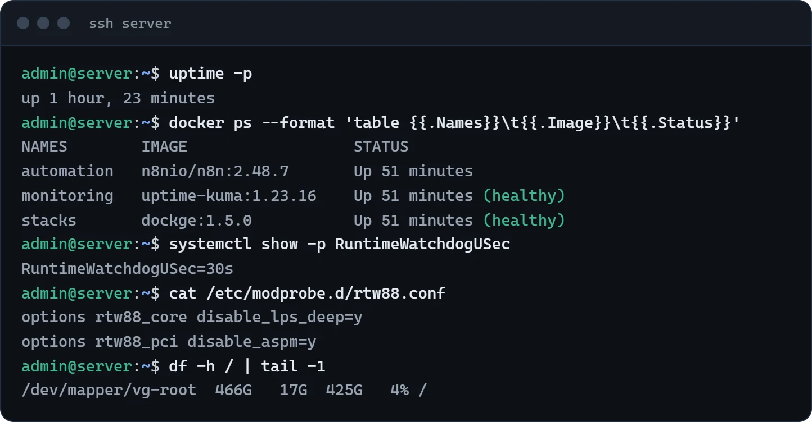

01
Automation
Workflows that take a daily chore off someone's desk: filing scanned invoices, watching news feeds, turning raw call exports into a finished report. Where the data is sensitive, it runs on-premises and nothing leaves the building.
System administrator · Automation · Web
Workflows that sort documents, watch news feeds and fill in reports, plus the websites and Windows machines they run on.
$ run news-radar
✓ 10 feeds fetched (HR + DE)
✓ 214 items → 9 relevant
✓ 9 sent to the newsroom on Telegram
done in 4.2 sAbout
I'm Ivan, a system administrator based in Germany. Most of what I build starts the same way: someone does the same task by hand every day, and I think a machine should do it.
Then I build that: an n8n workflow, a script, a small web app or a whole website. I care that it keeps running when I'm not looking, that people without a technical background can use it, and that nothing leaves the building that shouldn't.
What I do
01
Workflows that take a daily chore off someone's desk: filing scanned invoices, watching news feeds, turning raw call exports into a finished report. Where the data is sensitive, it runs on-premises and nothing leaves the building.

02
I set up and run websites end to end: WordPress, SEO and Search Console, cookie consent that holds up under GDPR, caching behind a CDN, DNS and mail. I run the technical side of the news portal Dnevnik Dijaspore.
Visit Dnevnik Dijaspore ↗03
The machines all of this runs on: Windows administration, virtual machines and containers, Linux servers, backups that are actually tested, and 2FA wherever it matters.

04
Old laptop, new job: it now runs Ubuntu Server 24/7 with n8n, Uptime Kuma and Dockge. Its Wi-Fi card liked to freeze the whole machine, so I tamed the driver and added a watchdog that brings it back by itself.
Part of this was built for a company, so it stays general here.
Projects
My own AI assistant on the server, on Telegram and in the team's Slack. It runs without admin rights.
Reads Croatian and German news feeds every hour and sends the few that matter to the newsroom.
Reads scanned invoices, names them and files them. Runs locally, nothing leaves the house.
My own domain with mail: SPF, DKIM and DMARC set by hand, HTTPS and 2FA everywhere.
Every day Linux & Docker · n8n · WordPress · PowerShell & Windows · DNS & mail · AI agents
Contact
Questions about something I've built, or just want to compare notes on automation? Find me here.